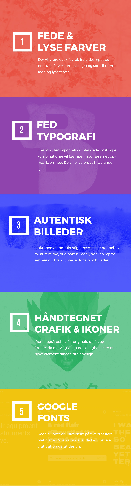

Jeg er en grafisk designer, som nyder design og prøver at lære så meget jeg overhovedet kan. Ved hjælp af værktøjerne, sætter jeg altid et mål – nemlig at blive dygtigere end sidste år. Og det eventyr fortsætter selvfølgelig også her i 2017.
Det bedste sted at starte er at se, hvordan den grafiske verden vil se ud i år, og hvilke slags trends vil tage 2017 med storm.
Det kommer til at blive en meget interessant år. Jeg vil liste 5 af dem, da der er sikkert er flere.
Afsluttende tanke
At følge en trend, fordi det er det nyeste, er som regel ikke en god ide. Hvis du får mod på at afprøve nogle af dem, så er det bedst at se, hvilke trends vil passe til dit projekt og din målgruppe
Jeg håber, at den her artikel gav dig en smule indsigt i nogle af de trends, som 2017 vil byde velkommen.Målet var ikke at lave en detaljeret liste, men vise på en overordnet plan.
Hvis du er interesseret i at se flere trends, så vil den her være til gavn:
2017 Design Trends Guide
Du kan kontakte Sharmarke Hujale, forfatteren af den her artikel på: sh@artselect.dk